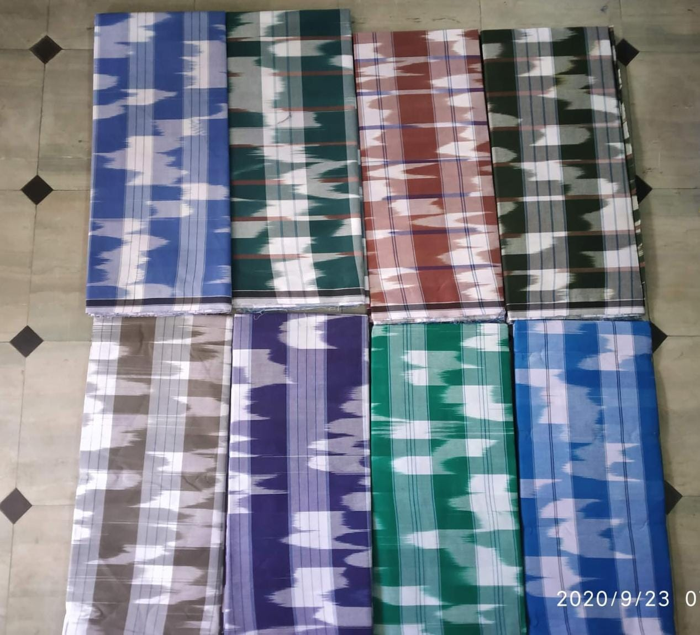
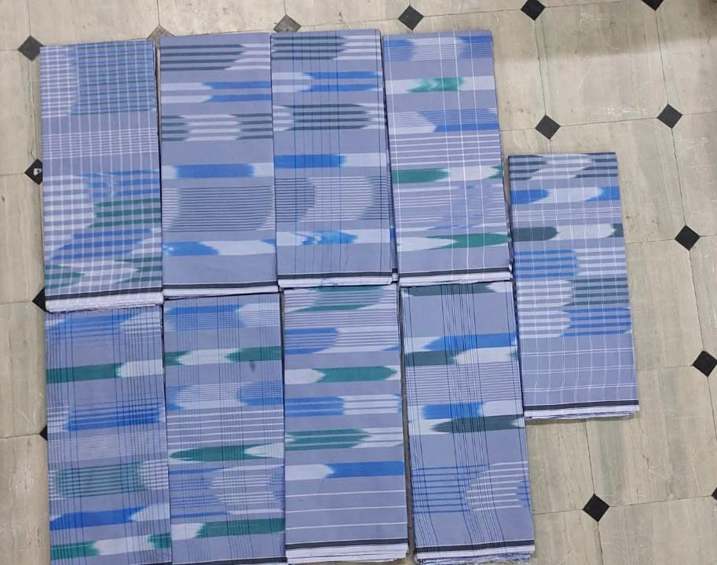

ஊர் · இருப்பிடம்
பொதட்டூர்பேட்டை தமிழ்நாட்டின் திருவள்ளூர் மாவட்டம், பள்ளிப்பட்டு வட்டத்தில் உள்ள பேரூராட்சி. அஞ்சல் குறியீடு 631208. Podhaturpet, Pothaturpettai என்ற பெயர்களிலும் குறிப்பிடப்படுகிறது.
ஊர் விவரங்களைப் படிக்க →பொதட்டூர்பேட்டை · தமிழ்நாடு
நூல்களின் நெசவு. மக்களின் வாழ்வு.
லுங்கிகள், ஊர் வாழ்க்கை, பயனுள்ள அன்றாடத் தகவல்கள் வழியாகப் பொதட்டூர்பேட்டையை அறியுங்கள். தொகுப்பைப் பாருங்கள் அல்லது உங்களுக்குத் தேவையான இணைப்பைக் கண்டறியுங்கள்.


பொதட்டூர்பேட்டை · பயனுள்ள ஊர் தகவல்கள்
பொதட்டூர்பேட்டை தமிழ்நாட்டின் திருவள்ளூர் மாவட்டம், பள்ளிப்பட்டு வட்டத்தில் உள்ள பேரூராட்சி. அஞ்சல் குறியீடு 631208. Podhaturpet, Pothaturpettai என்ற பெயர்களிலும் குறிப்பிடப்படுகிறது.
ஊர் விவரங்களைப் படிக்க →பேரூராட்சி கைத்தறி, வீடு சார்ந்த விசைத்தறிப் பணி, நெல்வயல்கள் ஆகியவற்றைக் குறிப்பிடுகிறது. ஊரின் வாழ்வாதாரங்களைப் புரிந்துகொள்ள நெசவும் விவசாயமும் நல்ல தொடக்கங்கள்.
ஊர் நெசவை அறிய →பேரூராட்சி விவரத்தில் திருத்தணி–பொதட்டூர்பேட்டை பேருந்து வழித்தடமும் சுமார் 21 கி.மீ. தொலைவில் திருத்தணி ரயில் நிலையமும் குறிப்பிடப்பட்டுள்ளன. புறப்படும் நேரம், கடைசி திரும்பும் இணைப்பைச் சரிபாருங்கள்.
பயணம் · வழித்தடம் · அஞ்சல் குறியீடு →பேரூராட்சி சேவை விசாரணை: 044-27849250. பள்ளிப்பட்டு வட்டாட்சியர் அலுவலக வருவாய்த் துறை விசாரணை: 044-27843231. அலுவலகம், ஆவணங்கள், ஏற்பாடுகளைச் செல்லும் முன் உறுதிசெய்யுங்கள்.
அலுவலகத் தொடர்புகள் · ஆதாரங்கள் →பள்ளி, மருத்துவமனைப் பட்டியல், கல்லூரி இணைப்புகள், போக்குவரத்து, அஞ்சல், வங்கி ஆதாரங்களை ஒரே வழிகாட்டியில் பாருங்கள். சேர்க்கை, நேரம், சேவைகளை நேரடியாக உறுதிசெய்யுங்கள்.
அன்றாட வழிகாட்டியைப் பார்க்க →அதிகாரப்பூர்வ கலாச்சார விவரத்தில் 10-ஆம் வார்டில் பூனியம்மன் கோயிலும் அம்மன் திருவிழா மரபுகளும் குறிப்பிடப்பட்டுள்ளன. ஆண்டுத் தேதிகளை உள்ளூரில் உறுதிசெய்து, திருத்தணி உள்ளிட்ட இடங்களுக்குத் தனியாகத் திட்டமிடுங்கள்.
கோயில்கள் · அருகிலுள்ள இடங்கள் →ஊர் விவரங்கள்: பேரூராட்சி மற்றும் மாவட்ட அலுவலக ஆதாரங்கள். சேவை நேரம், போக்குவரத்து, இருப்பு ஆகியவற்றைத் தற்போது உறுதிசெய்ய வேண்டும். பேரூராட்சி ஆதாரம் ↗
லுங்கி தொகுப்பு
உண்மையான தயாரிப்புப் படங்கள். மொத்த விற்பனை விவரம் கேட்க ஒரு வடிவத்தைத் தேர்ந்தெடுங்கள்.

வெள்ளைத் துணியில் மெல்லிய நீல, சாம்பல் நிறக் கட்டக் கோடுகள்.



இந்தப் பகுதியின் நெசவு அடையாளத்தை வெளிப்படுத்தும் பாரம்பரிய வடிவங்கள்.

விசைத்தறி லுங்கிகளைத் தேடுபவர்களுக்கான நீலக் கட்ட வடிவங்கள்.

ஆர்டர் செய்வதற்கு முன் இருப்பு, துணி, அளவு, குறைந்தபட்ச எண்ணிக்கை, மாதிரி, விலை மற்றும் விநியோக விதிகளை உறுதிசெய்யுங்கள்.
பொதட்டூர்பேட்டை லுங்கிகள் · வெளிநாட்டு வாங்குபவர்கள்
மலேசியா, சிங்கப்பூர், இலங்கைக்கான லுங்கி மற்றும் சரோங் விசாரணைகள். அசல் தயாரிப்புப் படங்கள்; நேரடித் தொடர்பு.

மலேசியா
உங்கள் மலேசியக் கடை அல்லது ஜவுளி வணிகத்திற்குப் பொதட்டூர்பேட்டையின் கட்ட லுங்கி வடிவங்களைப் பாருங்கள்.
இந்த நாட்டுக்கான விவரம் →சிங்கப்பூர்
உங்கள் சிங்கப்பூர் வணிகத்திற்கான வெள்ளை, கரை மற்றும் வண்ணக் கட்ட வடிவங்களை ஒப்பிடுங்கள்.
இந்த நாட்டுக்கான விவரம் →
இலங்கை
உங்கள் இலங்கை சில்லறை அல்லது மொத்தத் தொகுப்பிற்குப் பொதட்டூர்பேட்டை கட்ட லுங்கிகளைப் பற்றிப் பேசுங்கள்.
இந்த நாட்டுக்கான விவரம் →Podaturpet.com வழங்கிய அசல் லுங்கி படங்கள். நாட்டுப் பகுதிகள் விசாரணைக்கானவை; உள்ளூர் இருப்பு, விநியோகம் தனியாக உறுதிசெய்யப்படும்.
ஒரு இடத்தைத் தேர்ந்தெடுங்கள்: கோயில், ரயில் இணைப்புக்குத் திருத்தணி; தனித் திட்டமிட்ட கோயில் பயணத்திற்குத் திருப்பதி/திருமலை; மலைக்கோயில் பயணத்திற்குச் சோளிங்கர். அதிகாரப்பூர்வ அணுகல், முன்பதிவு விவரங்களைச் சரிபாருங்கள்.
அதிகாரப்பூர்வ மாவட்ட செய்திகள் · ஆதாரங்கள் சரிபார்ப்பு 13 நவம்பர் 2026
திருவள்ளூர் மாவட்டம்
வெளியான நாள்
விண்ணப்பிக்க கடைசி நாள் 18 நவம்பர் 2026 மாலை 5 மணி. தகுதி, ஆவணங்கள், விண்ணப்ப முறைக்கு அதிகாரப்பூர்வ அறிவிப்பைப் பாருங்கள்.
அதிகாரப்பூர்வ அறிவிப்பைப் படிக்க ↗தேதியிட்ட அறிவிப்பு · மாற்றங்களுக்கு ஆதாரத்தைப் பார்க்கவும்
திருவள்ளூர் மாவட்டம்
வெளியான நாள்
திருவள்ளூர் மாவட்ட வேலைவாய்ப்பு மற்றும் தொழில்நெறி வழிகாட்டும் மையத்தில் 20 நவம்பர் 2026 அன்று தனியார் வேலைவாய்ப்பு முகாம் அறிவிக்கப்பட்டுள்ளது. நேரம், பங்கேற்பு விவரங்களை அசல் அறிவிப்பில் உறுதிசெய்யுங்கள்.
அதிகாரப்பூர்வ அறிவிப்பைப் படிக்க ↗தேதியிட்ட அறிவிப்பு · மாற்றங்களுக்கு ஆதாரத்தைப் பார்க்கவும்
திருவள்ளூர் மாவட்டம்
வெளியான நாள்
குடும்ப அட்டையில் பெயர் சேர்த்தல், நீக்குதல், முகவரி மாற்றத்திற்கான முகாம் 14 நவம்பர் 2026 அன்று திருவள்ளூர் மாவட்ட வட்ட வழங்கல் அலுவலகங்களில் அறிவிக்கப்பட்டுள்ளது. ஏற்பாடுகள், தேவையான ஆவணங்களை அலுவலகத்தில் உறுதிசெய்யுங்கள்.
அதிகாரப்பூர்வ அறிவிப்பைப் படிக்க ↗தேதியிட்ட அறிவிப்பு · மாற்றங்களுக்கு ஆதாரத்தைப் பார்க்கவும்
இவை தேர்ந்தெடுக்கப்பட்ட அறிவிப்புகள்; நேரடிச் செய்தியோடை அல்ல. தற்போதைய ஏற்பாடுகளுக்கு அசல் ஆதாரத்தைப் பாருங்கள்.
MURARAJ TECHNOLOGIES
ஒப்புக்கொண்ட வரம்பில் உருவாக்க உதவி இலவசம். டொமைன், ஹோஸ்டிங், வன்பொருள், கட்டணச் சேவைகளுக்குத் தனிச் செலவு இருக்கலாம். விளம்பர விதிகள் தனியாக ஒப்புக்கொள்ளப்படும்.
அனைத்துத் தேவைகளுக்கும் ஒரே தொடர்பு.
லுங்கி விவரமோ தொழில்நுட்ப உதவியோ — English அல்லது தமிழில் செய்தி அனுப்புங்கள்.